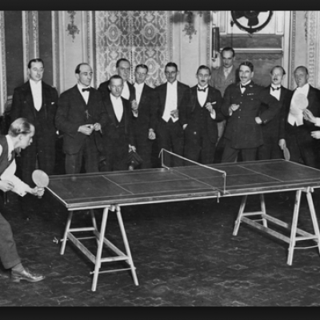

Sobre o Tênis de Mesa
Nascido e desenvolvido na Inglaterra durante a segunda metade do Século XIX, teve sua origem a partir do jogo medieval de tênis, que costumava ser jogado tanto ao ar livre quanto em espaços fechados. O tênis de mesa, portanto, foi concebido para ser um passatempo social, jogado em salas fechadas, especialmente no inverno, quando era mais difícil praticar o tênis de campo. Os primeiros registros do tênis de mesa revelam um jogo rude, iniciado por estudantes universitários com livros dispostos no lugar da rede, e por militares que o praticavam com equipamentos improvisados. As raquetes podiam ser de madeira, papelão ou tripa de animal, cobertas algumas vezes por cortiça, lixa ou tecido. As bolas, de cortiça ou borracha. As redes, de diferentes alturas – algumas vezes constituídas de um simples fio. Mesas de diferentes tamanhos, partidas com contagens de 10 ou 100 pontos, saques com um “quique” inicial na metade da mesa do sacador, sistema atual, ou diretamente na outra metade de encontro a um espaço limitado ou não, porém, com a obrigatoriedade de o sacador estar afastado da linha de fundo da mesa. Nunca figuravam quatro tipos diferentes de duplas. Em qualquer caso, era virtualmente o mesmo tipo de jogo, embora tivesse muitos nomes. No Século XIX, James Gibb, inglês, ex-corredor de maratonas, volta de uma viagem de negócios aos Estados Unidos com bolas de celuloide de brinquedo, que ele imaginou poderem ser úteis para este jogo em seu país. Ouvindo-as serem golpeadas por uma raquete oca, de cabo longo e feita de pele de carneiro, então bastante popular, associou os sons produzidos pela bola na raquete com o som ”pingue-pongue”, dando assim origem ao nome do jogo. O nome “Ping Pong” é então criado pela empresa inglesa J. Jaques and Son no final dos anos de 1800s, sendo registrado como marca pela empresa note-americana Parker Brothers. Os primeiros torneios são realizados a partir de 1901, com registro de centenas de participantes. Assim se cria a “Ping-Pong Association”, que é substituída em 1922 pela “Table Tennis Association”, dando lugar à International Table Tennis Federation (ITTF) em 1926. Nos anos de 1950 surge uma das grandes revoluções do esporte: a invenção da esponja ou “sanduíche de borracha”, um novo material para as raquetes que, até hoje, diminui a espessura relativa da raquete. Com a evolução do esporte, a ITTF buscou regular o uso de equipamentos para garantir o equilíbrio e a saúde dos atletas. O jogo ganha velocidade e golpes plásticos, com efeito. A modalidade, criada na Inglaterra, passa a ter dominância asiática, sendo praticado em diferentes partes do mundo. Em diferentes ambientes e por diferentes grupos de pessoas. Este é o tênis de mesa. A sua história está detalhada na linha do tempo, com destaque para fatos marcantes.
.png)